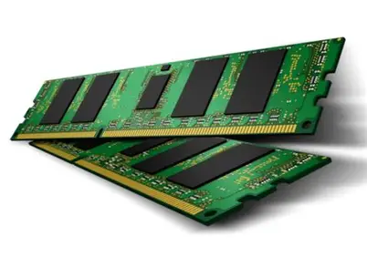
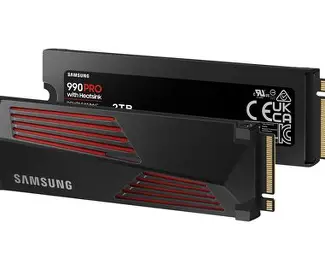

CPU
Utför beräkningar, är datorns hjärna.
Funktion: Kör program, styr systemet.
Fördel: Snabb, klarar multitasking.
Nackdel: Kan bli varm, dyr.
Vid skada: Datorn startar ej eller kraschar.

GPU
Renderar grafik, används i spel/video.
Funktion: Visar bilder/video och snabbar upp grafiktunga appar.
Fördel: Bra för gaming, grafik och AI.
Nackdel: Drar mycket ström, kostar mycket.
Vid skada: Ingen bild, störningar, kraschar.

RAM
Snabbt arbetsminne för aktuell data.
Funktion: Tillfällig lagring, hjälper multitasking.
Fördel: Ger snabb respons, lätt att byta.
Nackdel: Förlorar allt vid strömavbrott.
Vid skada: Frysningar, appkrascher.

SSD
Snabb lagring av filer och OS.
Funktion: Snabb filåtkomst, OS startar snabbare.
Fördel: Tyst, stöttålig, blixtsnabb.
Nackdel: Dyrare än HDD.
Vid skada: Dataförlust, Windows startar ej.

HDD
Stor, billig lagring med rörliga delar.
Funktion: Lagrar mycket data och backup.
Fördel: Billig per GB.
Nackdel: Långsammare än SSD, känslig för stötar.
Vid skada: Klickande ljud, kan ej läsa data.

Nätaggregat
Ger ström till allt.
Funktion: Försörjer komponenter.
Fördel: Skyddar mot strömspikar.
Nackdel: Dålig PSU kan förstöra datorn.
Vid skada: Startar ej, elproblem.

Moderkort
Kopplar ihop alla delar.
Funktion: Låter komponenter kommunicera.
Fördel: Möjligt att uppgradera.
Nackdel: Jobbig att byta.
Vid skada: Instabilt eller startar inte.

Windows
Ett populärt operativsystem av Microsoft.
Funktion: Startar program, hanterar filer och hårdvara.
Fördel: Enkelt, stort stöd för spel och program.
Nackdel: Virusrisk, kräver licens.
Vid skada: Kraschar, seg eller startar inte alls.